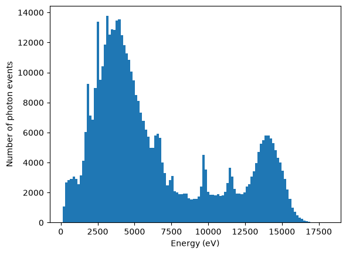
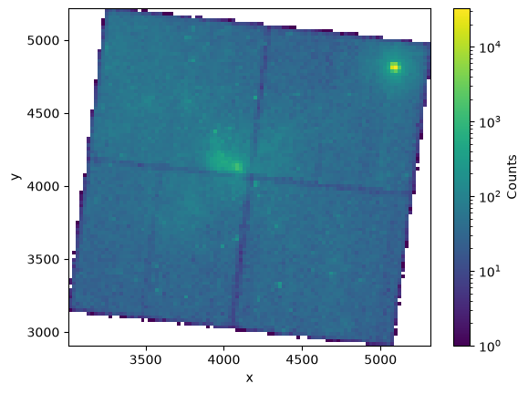
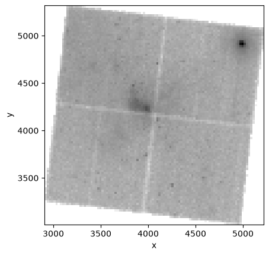
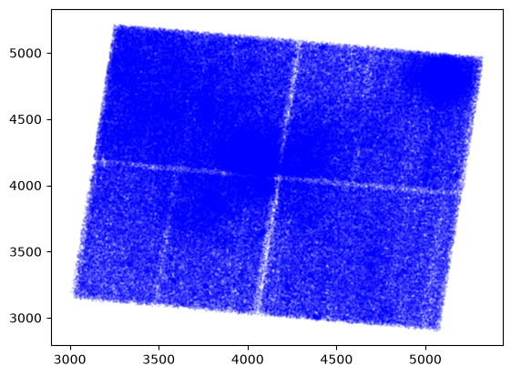
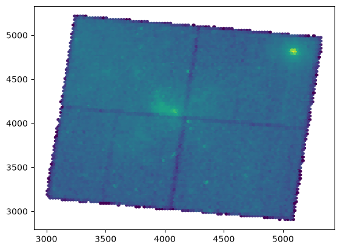
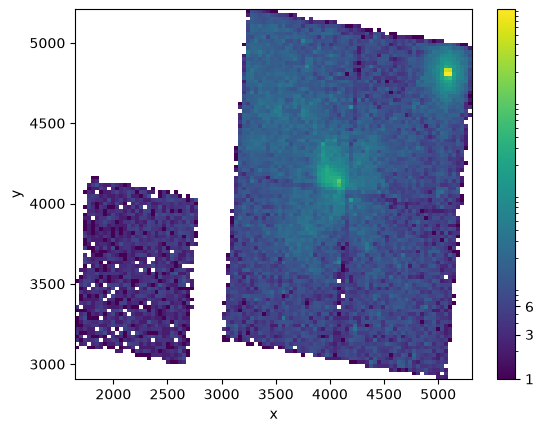

Working with Chandra FITS tables#
Learning Goals#
Download a Chandra FITS table file from a URL
Open a Chandra FITS table file and view table contents
Make a 2D histogram with the event list data
Close the FITS file after use
Keywords#
FITS, file input/output, table, numpy, matplotlib, histogram
Summary#
Chandra image data is stored as a table in FITS files, frequently referred to as “event lists”. Any time a photon interacts with the detector, the position, time, and energy of the photon (referred to as an “event”) is stored. Thus Chandra event lists are stored as table data, where the position and energy information is stored in the columns and each row corresponds to a separate photon interaction.
In this tutorial, we will use astropy.utils.data to download a Chandra FITS file, then use astropy.io.fits and astropy.table to open the file. Lastly, we will use matplotlib to visualize the Chandra event list as a histogram, effectively producing an X-ray image of the sky.
import numpy as np
from astropy.io import fits
from astropy.table import Table
from matplotlib.colors import LogNorm
# Set up matplotlib
import matplotlib.pyplot as plt
%matplotlib inline
The following line is needed to download the example FITS files used in this tutorial.
from astropy.utils.data import download_file
FITS files often contain large amounts of multi-dimensional data and tables.
In this particular example, we’ll open a FITS file from a Chandra observation of the Galactic Center. The file contains a list of events with x and y coordinates, energy, and various other pieces of information.
event_filename = download_file(
"http://data.astropy.org/tutorials/FITS-tables/chandra_events.fits", cache=True
)
Opening the FITS file and viewing table contents#
It’s possible to open a FITS file directly from the URL using the Table.read method (see Getting Started with Table I/O). However, the Chandra event files contain multiple FITS table extensions. As part of this tutorial, we want you to get familiar with exploring FITS file contents, so we will open the FITS file directly with the fits.open function.
Since the file is big, let’s open it with memmap=True to prevent RAM storage issues.
hdu_list = fits.open(event_filename, memmap=True)
hdu_list.info()
Filename: /home/runner/.cache/astropy/download/url/333246bccb141ea3b4e86c49e45bf8d6/contents
No. Name Ver Type Cards Dimensions Format
0 PRIMARY 1 PrimaryHDU 30 ()
1 EVENTS 1 BinTableHDU 890 483964R x 19C [1D, 1I, 1I, 1J, 1I, 1I, 1I, 1I, 1E, 1E, 1E, 1E, 1J, 1J, 1E, 1J, 1I, 1I, 32X]
2 GTI 3 BinTableHDU 28 1R x 2C [1D, 1D]
3 GTI 2 BinTableHDU 28 1R x 2C [1D, 1D]
4 GTI 1 BinTableHDU 28 1R x 2C [1D, 1D]
5 GTI 0 BinTableHDU 28 1R x 2C [1D, 1D]
6 GTI 6 BinTableHDU 28 1R x 2C [1D, 1D]
In this case, we’re interested in reading EVENTS, which contains information about each X-ray photon that hit the detector.
To find out what information the table contains, let’s print the column names.
print(hdu_list[1].columns)
ColDefs(
name = 'time'; format = '1D'; unit = 's'
name = 'ccd_id'; format = '1I'
name = 'node_id'; format = '1I'
name = 'expno'; format = '1J'
name = 'chipx'; format = '1I'; unit = 'pixel'; coord_type = 'CPCX'; coord_unit = 'mm'; coord_ref_point = 0.5; coord_ref_value = 0.0; coord_inc = 0.023987
name = 'chipy'; format = '1I'; unit = 'pixel'; coord_type = 'CPCY'; coord_unit = 'mm'; coord_ref_point = 0.5; coord_ref_value = 0.0; coord_inc = 0.023987
name = 'tdetx'; format = '1I'; unit = 'pixel'
name = 'tdety'; format = '1I'; unit = 'pixel'
name = 'detx'; format = '1E'; unit = 'pixel'; coord_type = 'LONG-TAN'; coord_unit = 'deg'; coord_ref_point = 4096.5; coord_ref_value = 0.0; coord_inc = 0.00013666666666667
name = 'dety'; format = '1E'; unit = 'pixel'; coord_type = 'NPOL-TAN'; coord_unit = 'deg'; coord_ref_point = 4096.5; coord_ref_value = 0.0; coord_inc = 0.00013666666666667
name = 'x'; format = '1E'; unit = 'pixel'; coord_type = 'RA---TAN'; coord_unit = 'deg'; coord_ref_point = 4096.5; coord_ref_value = 266.41519201128; coord_inc = -0.00013666666666667
name = 'y'; format = '1E'; unit = 'pixel'; coord_type = 'DEC--TAN'; coord_unit = 'deg'; coord_ref_point = 4096.5; coord_ref_value = -29.012248288366; coord_inc = 0.00013666666666667
name = 'pha'; format = '1J'; unit = 'adu'; null = 0
name = 'pha_ro'; format = '1J'; unit = 'adu'; null = 0
name = 'energy'; format = '1E'; unit = 'eV'
name = 'pi'; format = '1J'; unit = 'chan'; null = 0
name = 'fltgrade'; format = '1I'
name = 'grade'; format = '1I'
name = 'status'; format = '32X'
)
Now we’ll take this data and convert it into an astropy table. While it’s possible to access FITS tables directly from the .data attribute, using Table tends to make a variety of common tasks more convenient.
evt_data = Table(hdu_list[1].data)
For example, you can use the pprint method to preview a text-formatted version of the table. By using the max_lines keyword in the example below, we can limit how much space the text takes up.
evt_data.pprint(max_lines=10)
time ccd_id node_id expno ... pi fltgrade grade status
------------------ ------ ------- ----- ... --- -------- ----- --------------
238623220.9093583 3 3 68 ... 951 16 4 False .. False
238623220.9093583 3 1 68 ... 180 64 2 False .. False
238623220.9093583 3 2 68 ... 831 8 3 False .. False
... ... ... ... ... ... ... ... ...
238672393.59075934 0 1 15723 ... 456 0 0 False .. False
238672393.59075934 0 1 15723 ... 663 16 4 False .. False
238672393.63179934 6 1 15723 ... 129 0 0 False .. False
Length = 483964 rows
We can extract data from the table by referencing the column name. Let’s try making a histogram for the energy of each photon, which will give us a sense for the spectrum (folded with the detector’s efficiency).
energy_hist = plt.hist(evt_data["energy"], bins="auto")
plt.xlabel("Energy (eV)")
plt.ylabel("Number of photon events")
Text(0, 0.5, 'Number of photon events')

Making a 2D histogram with some table data#
Next we’ll make an image by binning the x and y coordinates of the events into a 2D histogram.
A one dimensional histogram, as shown above, shows the number of events within each bin corresponding to one axis of information. In the plot above, we chose histogram bins in the energy, shown on the x-axis.
A two dimensional histogram finds the number of events binned according to two dimensions. To make an image, we will bin the number of events by x and y position on the sky.
This particular observation spans five CCD chips. First, we determine the events that only fell on the main (ACIS-I) chips, which have number ids 0, 1, 2, and 3. We can do this by creating an array of True and False values (ii below) to filter out events that only fall on those chips.
ii = np.isin(evt_data["ccd_id"], [0, 1, 2, 3])
Method 1: Use hist2d with a log-normal color scheme#
We can make a 2D histogram plot directly with the function matplotlib.pyplot.hist2d, as shown below.
In this example, we choose the matplotlib color map named “viridis”, and we choose to distribute the colors logarithmically using matplotlib.colors.LogNorm().
To see what colormaps are available with matplotlib, see http://wiki.scipy.org/Cookbook/Matplotlib/Show_colormaps
NBINS = (100, 100)
img_zero_mpl = plt.hist2d(
evt_data["x"][ii], evt_data["y"][ii], NBINS, cmap="viridis", norm=LogNorm()
)
# Show the color bar scale next to the plot. The color corresponds to number
# of photon events (counts) in each pixel.
cbar = plt.colorbar(label="Counts")
plt.xlabel("x")
plt.ylabel("y")
Text(0, 0.5, 'y')

Method 2: Use numpy to make a 2D histogram and imshow to display it#
When we plot with matplotlib.pyplot.hist2d, it forces the plot into the default figure size, which could cause your image to appear stretched.
By using matplotlib.pyplot.imshow, we can avoid stretching the image. To do that, we need to make a 2D array containing the number of counts per pixel bin using numpy.histogram2d, as shown below.
NBINS = (100, 100)
img_zero, xedges, yedges = np.histogram2d(evt_data["y"][ii], evt_data["x"][ii], NBINS)
# This array describes how to map the position of the 2D array containing the image
# to the x and y positions on the sky
extent = [xedges[0], xedges[-1], yedges[0], yedges[-1]]
plt.imshow(
img_zero,
extent=extent,
interpolation="nearest",
cmap="gist_yarg",
origin="lower",
norm=LogNorm(),
)
plt.xlabel("x")
plt.ylabel("y")
Text(0, 0.5, 'y')

Close the FITS file#
When you’re done using a FITS file, it’s often a good idea to close it. That way you can be sure it won’t continue using up excess memory or file handles on your computer. (This happens automatically when you close Python, but you never know how long that might be…)
hdu_list.close()
Exercises#
Make a scatter plot of the same data you histogrammed above. The plt.scatter function is your friend for this. What are the pros and cons of doing it this way?
energy_scatter = plt.scatter(
evt_data["x"][ii], evt_data["y"][ii], s=1, alpha=0.1, color="b"
)

Try the same with the plt.hexbin plotting function. Which do you think looks better for this kind of data?
energy_hex = plt.hexbin(evt_data["x"][ii], evt_data["y"][ii], norm=LogNorm())

Choose an energy range to make a slice of the FITS table, then plot it. How does the image change with different energy ranges?
NBINS = (100, 100)
ii = (evt_data["energy"] > 3500) & (evt_data["energy"] < 5000)
img_zero_mpl = plt.hist2d(
evt_data["x"][ii], evt_data["y"][ii], NBINS, cmap="viridis", norm=LogNorm()
)
cbar = plt.colorbar(ticks=[1.0, 3.0, 6.0])
cbar.ax.set_yticklabels(["1", "3", "6"])
plt.xlabel("x")
plt.ylabel("y")
Text(0, 0.5, 'y')
